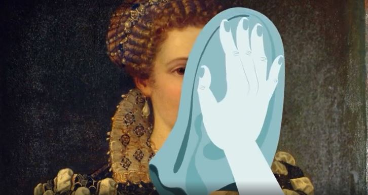
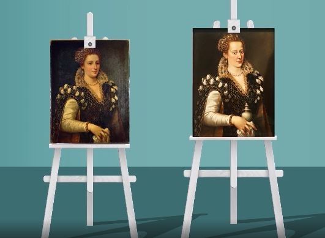
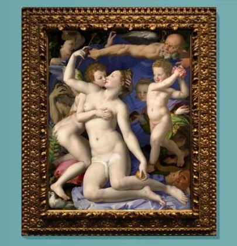
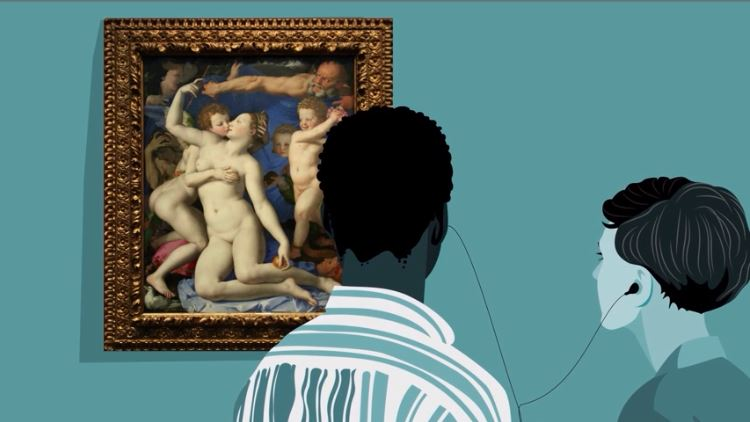
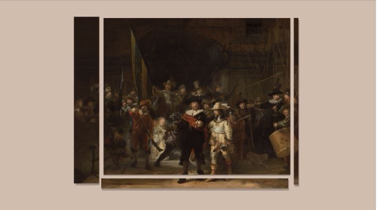
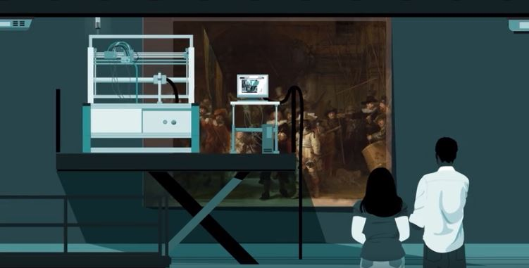
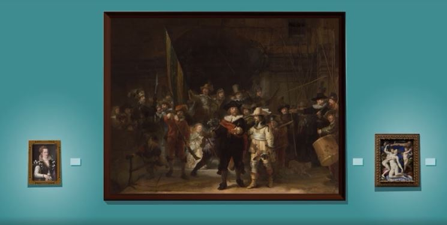

Ці картини в небезпеці. Усі троє були пошкоджені, деякі таким чином, що їх майже неможливо побачити неозброєним оком. Чи можете здогадатися, як вони були змінені? Ви можете бути здивовані.
Коли куратор музею оглянув портрет, приписуваний італійському художнику XVI століття Бронзіно, він запідозрив, що це сучасна підробка. Однак, уважно вивчивши тріщини на його поверхні, реставратор виявив, що він належить до тієї епохи.
За останні століття портрет просто зазнав кардинальних змін. За допомогою рентгенівської технології реставратори зазирнули під зовнішню поверхню фарби і побачили обличчя зовсім іншої жінки, бо сновні частини картини були змінені під час реставрації в 19 столітті.
До середини 20 століття реставратори мистецтва дотримувалися жорсткішого підходу, часто вважаючи, що вони вдосконалюють мистецтво. Зараз вони зосереджуються на збереженні оригінальної роботи в недоторканості, з мінімальним втручанням. Коли їм потрібно щось виправити, вони зазвичай роблять свої маркування візуально та хімічно відмінними від оригіналу, тому їх можна нешкідливо видалити. Але робота минулих реставраторів є загрозою, з якою сучасні постійно борються, як це було з цим портретом.
Щоб відновити оригінал, реставратор почав видаляти зовнішнє лакове покриття. Лак зазвичай використовується, щоб захистити картини та зробити їхні кольори яскравими, але природні лаки, які застосовували минулі реставратори, з часом потемніли, що надає жовтий вигляд старим картинам. Повільно розчиняючи лак, реставратор відкрив унизу чіткі кольори. Взявши невеликі зразки доданого та оригінального шарів фарби, працівники проаналізували склад кожного з них, а потім вирішили, які розчинники можуть допомогти, мінімально впливаючи на оригінал. Обережно промокаючи ними полотно, вони видаляли витончені ручки й ідеалізоване обличчя.
Справжній малюнок під ним показує Ізабеллу з італійської династії Медічі. Портрет не Бронзіно, але він датується приблизно 1570 роком і, можливо, був написаним одним із його учнів. Вікторіанський макіяж, ймовірно, був зроблений для збільшення продажів, оскільки оригінальне полотно не вважалося привабливим. Але тепер Ізабелла повернулася, прямо дивлячись поглядом свого глядача.
Ця картина, «Алегорія з Венерою та Купідоном», насправді належить Бронзіно, і вона була завершена приблизно в 1545 році. У центрі її — поцілунок між Венерою та її сином Купідоном, але вона була дещо змінена.
Коли лондонська Національна галерея придбала це полотно в 1860 році, директор галереї вважав його занадто ризикованим для вікторіанської Англії. Тож він доручив реставратору затемнити язик і сосок Венери. Століття після цієї модифікації реставратори мистецтва проаналізували та видалили напис за допомогою добірних розчинників. У процесі вони також зрозуміли, що вуаль, яка покриває промежину Венери, і гілка, що приховує задню частину Купідона, були також домальовані. Усунувши два шари цензури з картини, вона нарешті змогла похвалитися своїми провокаційними оригінальними деталями.
Ця величезна картина під назвою «Нічна варта» була завершена Рембрандтом у 1642 році.
Відтоді вона пережила одну драматичну ампутацію, два поранення ножем, кислотну атаку та століття забруднення. Реставратори прибрали бруд, залікували порізи за допомогою клею та додаткової підкладки з полотна, але зіткнулися з ще складнішою проблемою. У 1715 році з усіх боків полотна були видалені смуги, включно з двома футами зліва, щоб розмістити полотно в Ратуші Амстердама. Відтоді вони були втрачені.
Але багаторічний проект збереження, який розпочався у 2019 році, замінив відсутні частини. Реставраторам це вдалося, навчивши штучний інтелект цифровому малюванню в стилі Рембрандта. Потім, використовуючи зображення оригіналу іншого художника, програма відтворила та надрукувала втрачені частини картини.
Нарешті команда повернула «Нічний дозор» у його повний розмір із найкращими припущеннями, створеними штучним інтелектом, щоб заповнити прогалини.
